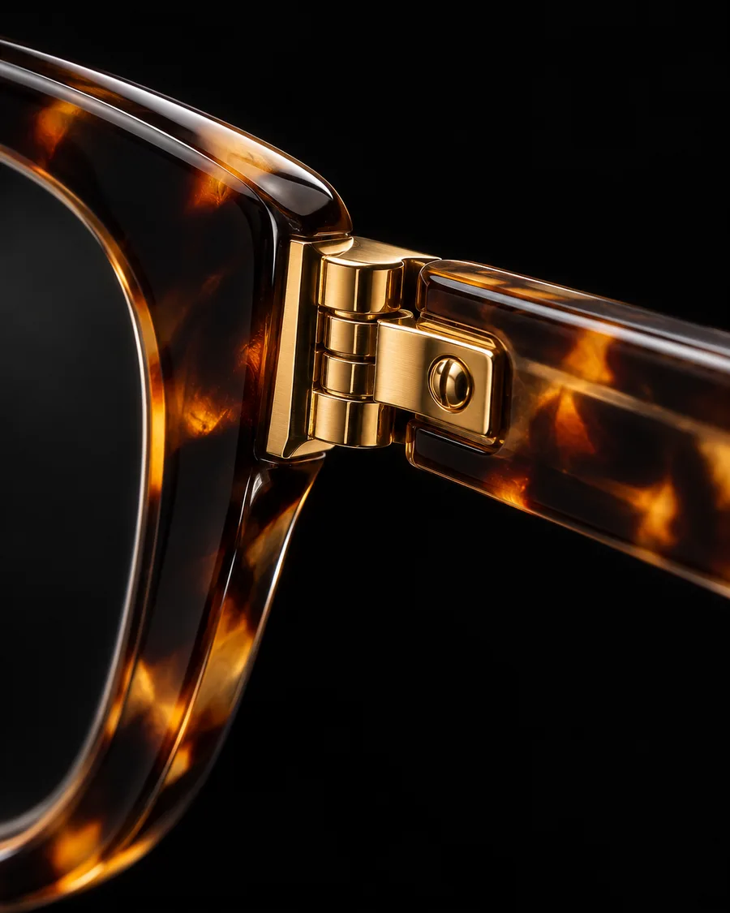

TREE Spectacles
Włoska forma, japońska precyzja. Oprawy z japońskiego tytanu i biooctanu, bez zbędnych ozdób. Przymierzysz je u nas, przy Piotrkowskiej 172/180.
- Założona
- 2011, Marco Barp
- Region
- Belluno, Włochy
- Materiały
- japoński tytan, biooctan

Detale, które widać z bliska

zdjęcie poglądowe Fazowany front
Krawędzie ścięte pod kątem łapią światło z każdej strony.

zdjęcie poglądowe Grawer na zauszniku
„Handmade with refined materials”: ręczna robota i dobrane materiały.

zdjęcie poglądowe Metal przy zawiasie
Złota wstawka zestawiona z acetatem havana.

Jeden model, trzy kolory
Ten sam kształt w bordo, havanie i niebieskim krysztale. Kolor oprawy zmienia twarz bardziej niż kształt, dlatego przy przymierzaniu zaczynamy od kolorów.
TREE Spectacles założył w 2011 roku Marco Barp, w regionie Belluno, który od pokoleń kojarzy się z produkcją okularów.
Jak czytać rozmiar oprawy
Na wewnętrznej stronie zausznika każdej oprawy są trzy liczby. O wygodzie i tak decyduje przymiarka: jak oprawa leży na nosie, gdzie wypadają źrenice, czy zausznik nie uciska.
54□16.5-145
- 54 mm
- szerokość jednego szkła
- 16,5 mm
- szerokość mostka nad nosem
- 145 mm
- długość zausznika
Przymierz TREE w salonie
Zadzwoń przed wizytą: sprawdzimy, które modele i kolory są na miejscu [odkładanie opraw do potwierdzenia].